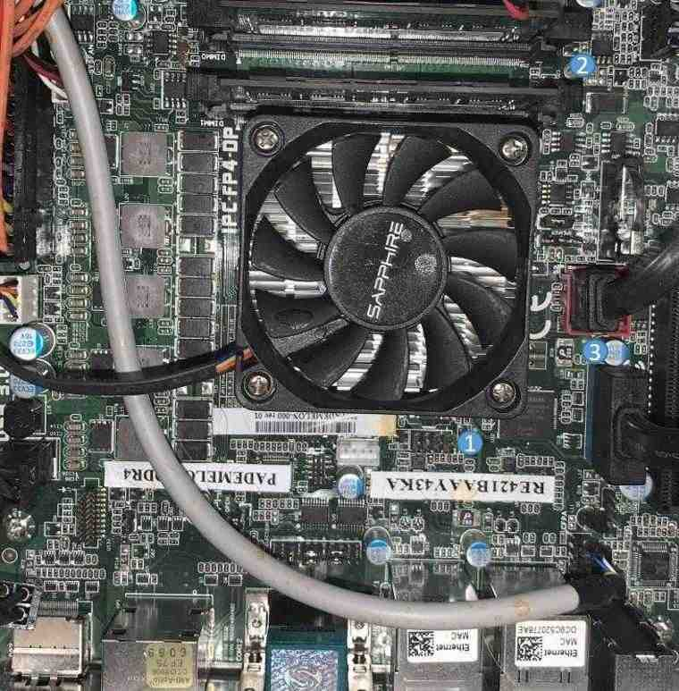
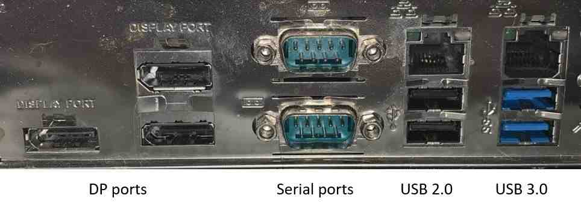

Pademelon board
Specs (with Merlin Falcon SOC)
Two 260-pin DDR4 SO-DIMM slots, 1.2V DDR4-1333/1600/1866/2133 SO-DIMMs Supports 4GB, 8GB and 16GB DDR4 unbuffered ECC (Merlin Falcon)SO-DIMMs
Can use Prairie Falcon, Brown Falcon, Merlin Falcon, though coreboot code is specific for Merlin Falcon SOC. Some specs will change if not using Merlin Falcon.
One half mini PCI-Express slot on back side of mainboard
One PCI Express® 3.0 x8 slot
Two SATA3 ports with 6Gb/s data transfer rate
Two USB 2.0 ports at rear panel
Two USB 3.0 ports at rear panel
Dual Gigabit Ethernet from Realtek RTL8111F Gigabit controller
6-channel High-Definition audio from Realtek ALC662 codec
One soldered down SPI flash with dediprog header
Mainboard

Three items are marked in this picture
dediprog header
memory dimms, address 0xA0 and 0xA4
SATA cables connected to motherboard
Back panel

The lower serial port is UART A (debug serial)
Flashing coreboot
Type |
Value |
|---|---|
Socketed flash |
no |
Model |
Macronix MX256435E |
Size |
8 MiB |
Flash programming |
dediprog header |
Package |
SOIC-8 |
Write protection |
No |
Technology
Fan control |
Using fintek F81803A |
CPU |
Merlin Falcon (see reference) |
Description of pictures within this document
pademelon.jpg |
Motherboard with components identified |
pademelon_io.jpg |
Back panel picture |